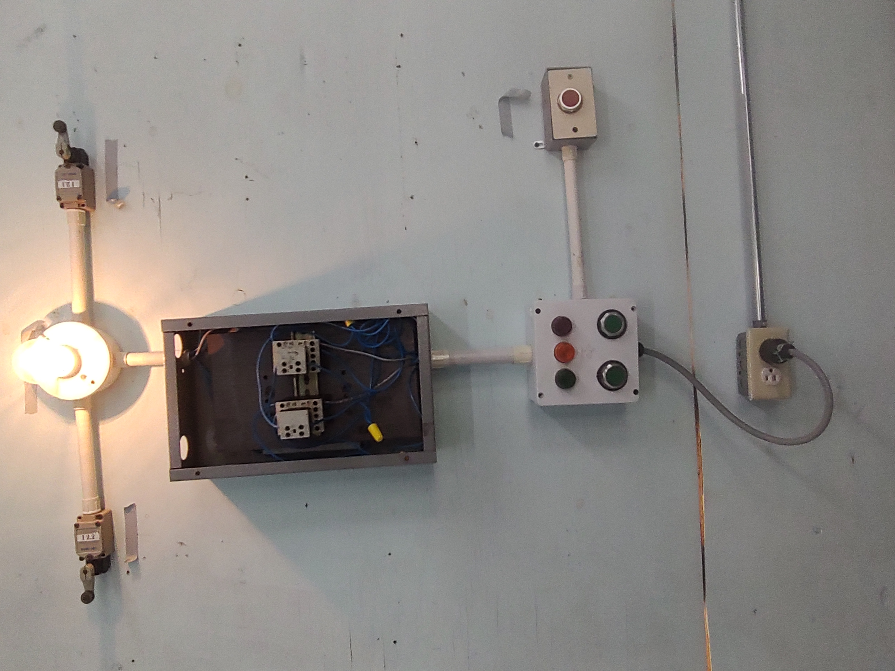
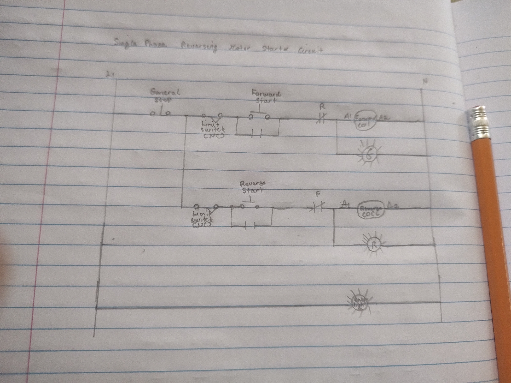

An ampala for ya
This section of the portfolio highlights the design and practical work completed on a Single Phase Reversing Magnetic Motor Starter Circuit with Limit Switches. Its purpose is to demonstrate my understanding of controlling a motor for forward and reverse operation, along with the use of limit switches to automatically stop the motor at set positions for safe and accurate control. It includes diagrams, photos, and written explanations showing the wiring and operation of the circuit. Overall, this section reflects my ability to assemble, test, and apply safe installation practices in motor control systems.

Fig 1.7: Completed Project for Single Phase Reversing Motor Starter.

Fig 1.8: Control Circuit for Singe Phase Reversing Magnetic Motor Starter.
| Item.No | Description | Quality | Quantity |
|---|---|---|---|
| 1 | Single Phase Motor | Good | 1 |
| 7 | Limit switch | Good | 2 |
| 3 | Light bulb | Good | 1 |
| 2 | Contactor | Good | 2 |
| 9 | Overload | Good | 1 |
| 1 | 2.5mm² wire | Good | 5 yards |
| 1 | Screw Connector | Good | 7 |
| 1 | LED | Good | 3 |
Each component in the circuit serves a specific function, where motors provide mechanical output, contactors control the switching of power, overload relays offer protection against excessive current, and control devices such as push buttons allow safe operation of the system. The design also follows relevant electrical codes and industry standards through the correct selection of cable sizes, proper earthing, and the use of appropriate protective devices to ensure safe and reliable installation. For wet or damp environments, weatherproof enclosures, sealed fittings, and suitable conduit systems were used to prevent moisture ingress and reduce the risk of electrical faults. The layout and enclosure choices were made with practicality in mind, ensuring easy access for operation and maintenance while also protecting equipment from damage and improving overall safety and efficiency.
Imporved Design Features;
When building a reversing magnetic motor starter circuit it is encouraged to isolate the power supply before wiring and following proper Lockout/Tagout procedures. Correctly rated cables, contactors, and overload relays should be used to prevent faults and overheating. Electrical and mechanical interlocking must be installed to prevent both contactors operating at the same time. Proper grounding, secure connections, and the use of PPE such as insulated gloves and safety boots help reduce shock risk. The installation should follow recognized standards from the International Electrotechnical Commission and guidelines similar to the National Electrical Code.
This portfolio represents a comprehensive journey through the technical and theoretical aspects of Electrical Engineering. From basic circuit analysis to advanced industrial motor controls, I have documented my growth in technical proficiency, safety awareness, and documentation. These skills form a solid foundation for my future career as an Electrical Professional.